본 포스트는 Youngwoon Lee 교수님의 Deep Reinforcement Learning 강의 자료 중 Lecture 03-2 — PPO (총 27장)를 바탕으로, 강의를 처음 듣는 독자도 논리적 흐름을 따라갈 수 있도록 재구성한 것입니다. 원본 슬라이드는 영문으로 작성되어 있으며, 본문의 대섹션은 슬라이드 제목을 그대로 차용하되 같은 제목이 연달아 나오는 슬라이드(Proximal policy optimization (PPO) 4장)는 하나로 묶었습니다. 목차 역할만 하는 Plan for today 슬라이드(actor-critic algorithm recap → improving actor-critic algorithm → PPO)는 별도 섹션으로 두지 않았습니다. 앞부분의 행위자–비평가 복습(3–6쪽)은 앞 회차 04. Actor-Critic Methods 포스트와 내용이 겹치지만, 이번 강의의 두 처방이 모두 “그 알고리즘의 어느 칸이 비어 있는가”에서 출발하므로 생략하지 않고 짚고 넘어갑니다. 또한 21–25쪽에는 제목 없이 데모 영상·사진과 출처 표기만 있는 슬라이드가 이어지는데, 본 포스트는 이들을 바로 인접한 제목 슬라이드(Why is PPO good?, More than just walking, ChatGPT (RL from Human Feedback))의 하위 절로 붙여 정리했습니다. 본문의 대섹션 번호는 원본 슬라이드에 없는 것을 읽기 편하도록 붙인 것입니다.
한 줄 요약 (TL;DR)
“중요도 표집으로 데이터를 여러 번 재사용하되, 두 정책의 확률비가 \([1-\epsilon,\, 1+\epsilon]\)을 벗어나면 목적함수를 잘라 더 이상 이득이 생기지 않게 만든다 — 그것이 PPO입니다.”
지난 회차의 행위자–비평가(actor-critic)는 궤적 전체를 기다리지 않고 \(N\) 스텝마다 갱신할 수 있게 되어 REINFORCE보다 표본 효율이 나아졌지만, 두 개의 구멍이 남았습니다 — ① 이점(advantage) 추정이 부정확하고, ② 모은 데이터를 경사 갱신 단 한 번에만 쓸 수 있습니다. 이번 회차는 이 둘을 각각 메웁니다. ①에 대해서는 몬테카를로 반환값(무편향·고분산)과 한 스텝 부트스트랩(저분산·고편향) 사이에서 절충점을 찾는 \(n\)-단계 반환값을 도입하고, “그 \(n\)을 어떻게 고를 것인가”라는 새 문제를 모든 \(n\)을 \(\lambda^{n-1}\)로 지수가중 평균하는 GAE로 해소합니다. ②에 대해서는 중요도 표집(importance sampling)으로 기댓값의 기준 분포를 \(\pi_{\theta_{\mathrm{old}}}\)로 옮겨, 한 번 모은 데이터로 \(K\)번 갱신합니다. 그런데 이 재사용에는 대가가 따릅니다 — 갱신이 반복될수록 \(\pi_\theta\)가 \(\pi_{\theta_{\mathrm{old}}}\)에서 멀어지고, 확률비가 커지면 학습이 불안정해집니다. 그래서 두 정책을 가깝게 묶어 두는 제약이 필요해지는데, 파라미터 공간의 \(\lVert \theta - \theta_{\mathrm{old}} \rVert^2 \le \epsilon\)이나 정책 공간의 KL 제약(TRPO) 대신 확률비 자체를 \([1-\epsilon, 1+\epsilon]\)로 자르는(clipping) 가장 단순한 방식을 택한 것이 PPO입니다. 그 결과 구현이 간단하고, 이산·연속 행동 공간을 모두 지원하며, 병렬화가 쉬운 알고리즘이 되어 로봇 조립·보행부터 ChatGPT의 RLHF까지 쓰이게 됩니다. 다만 PPO는 여전히 온폴리시(on-policy) 알고리즘이라는 한계를 남기며, 그 지점이 다음 회차의 오프폴리시 강화학습으로 이어집니다.
1. 정책 경사의 분산을 줄이는 방법 요약 (Summary of Reducing Variance of Policy Gradient)
강의는 지난 회차의 결론 슬라이드를 그대로 다시 꺼내며 시작합니다. 정책 경사의 추정식에서 가중치 자리를 무엇으로 채울 것인가가 문제였습니다.
\[ \nabla_\theta J(\theta) \approx \frac{1}{N} \sum_{i=1}^{N} \Big( \sum_{t=1}^{T} \nabla_\theta \log \pi_\theta(\mathbf{a}_t^i \mid \mathbf{s}_t^i) \Big) \big( \, \boldsymbol{?} \, \big) \]
그 자리에 들어갈 수 있는 네 가지가 다음과 같이 정리되어 있습니다.
| 무엇으로 채우는가 | 식 | 그 행동을 무엇으로 평가하는가 |
|---|---|---|
| 보상의 합 (sum of rewards) | \(\Sigma_{t=1}^{T} r(\mathbf{s}_t^i, \mathbf{a}_t^i)\) | 좋은 총(total) 보상으로 이어지는 행동 |
| 남은 보상 (reward to-go) | \(\Sigma_{t'=t}^{T} r(\mathbf{s}_{t'}^i, \mathbf{a}_{t'}^i)\) | 하나의 궤적에서 좋은 미래 보상으로 이어지는 행동 |
| 남은 보상의 더 나은 추정 | \(Q_\phi^{\pi_\theta}(\mathbf{s}_t^i, \mathbf{a}_t^i)\) | 여러 궤적에서 좋은 미래 보상으로 이어지는 행동 |
| 이점 (advantage) | \(A_\phi^{\pi_\theta}(\mathbf{s}_t^i, \mathbf{a}_t^i) = Q_\phi^{\pi_\theta}(\mathbf{s}_t^i, \mathbf{a}_t^i) - V_\phi^{\pi_\theta}(\mathbf{s}_t^i)\) | 더 나은(better) 미래 보상으로 이어지는 행동 |
- 위에서 아래로 내려갈수록 시각 \(t\)의 행동과 무관한 잡음이 한 겹씩 걷힙니다. 과거 보상을 떼어 내고, 한 궤적의 우연을 여러 궤적의 평균으로 바꾸고, 마지막으로 상태 자체의 좋음을 빼내 행동의 상대적 기여만 남기는 순서입니다.
- 사다리의 맨 아래 칸인 이점을 쓰는 것이 곧 행위자–비평가이며, 이번 강의는 여기서부터 시작합니다. 즉 “무엇을 가중치로 쓸 것인가”는 이미 답이 나왔고, 남은 질문은 “그 이점을 얼마나 잘 추정할 수 있는가”와 “그 데이터를 몇 번이나 쓸 수 있는가”입니다.
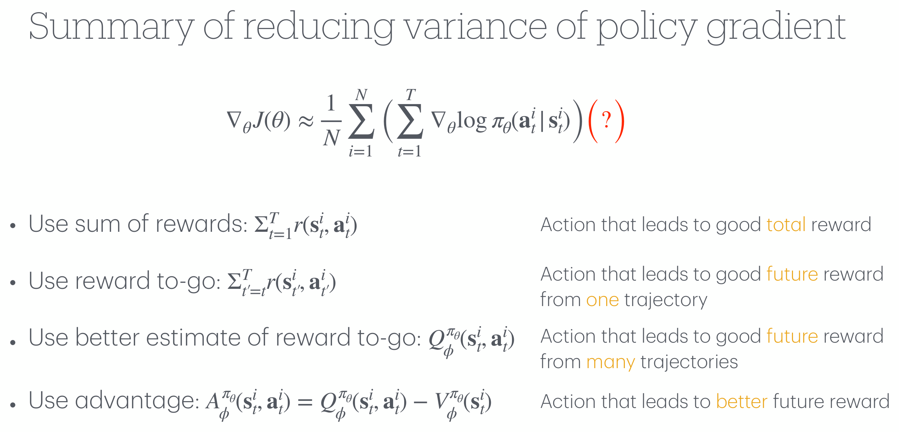
2. REINFORCE
먼저 두 알고리즘을 나란히 놓고 무엇이 달라졌는지 확인합니다. REINFORCE는 다음 네 단계의 반복입니다.
- \(\pi_\theta(\mathbf{a} \mid \mathbf{s})\)를 롤아웃해 궤적 \(\{\tau^i\}\)를 표집합니다 — \(\pi_\theta\)를 \(N\)개의 궤적만큼 굴립니다.
- \(r(\tau^i) = \Sigma_t r_t^i\)를 계산합니다.
- \(\nabla_\theta J(\theta) \approx \frac{1}{N} \Sigma_i \big( \Sigma_t \nabla_\theta \log \pi_\theta(\mathbf{a}_t^i \mid \mathbf{s}_t^i) \big) r(\tau^i)\)
- \(\theta' \leftarrow \theta + \alpha \nabla_\theta J(\theta)\)
강의가 이 슬라이드에 붙여 놓은 진단은 한 줄입니다 — “모든 경사 갱신이 새로운 궤적을 요구한다(Every gradient update requires new trajectories!) → 표본 비효율적(sample inefficient)”입니다.
- 갱신의 단위가 “궤적”이라는 점이 문제의 핵심입니다. 2단계의 \(r(\tau^i)\)를 계산하려면 에피소드가 끝까지 진행되어야 하고, 그전까지는 파라미터를 한 칸도 움직일 수 없습니다.
- 게다가 지난 회차에서 확인했듯 그렇게 모은 데이터는 한 번 갱신하고 나면 버려야 합니다. \(\theta\)가 바뀌는 순간 그 궤적들은 더 이상 현재 정책의 표본이 아니기 때문입니다.
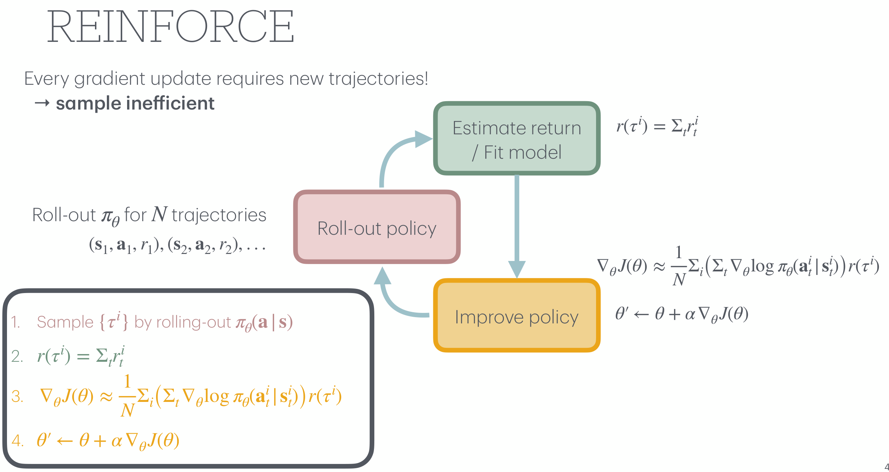
3. 행위자–비평가 알고리즘 (Actor-Critic Algorithm)
행위자–비평가는 같은 순환 도식을 쓰지만 표집의 단위와 초록 상자의 내용이 달라집니다.
- \(\pi_\theta(\mathbf{a} \mid \mathbf{s})\)를 롤아웃해 \(N\)개의 전이 표본 \(\{\mathbf{s}_i, \mathbf{a}_i, r_i\}\)을 모읍니다 — \(\pi_\theta\)를 \(N\) 스텝만큼 굴립니다.
- \(V_\phi^{\pi_\theta}(\mathbf{s})\) 또는 \(Q_\phi^{\pi_\theta}(\mathbf{s}, \mathbf{a})\)를 갱신합니다.
- \(\nabla_\theta J(\theta) \approx \frac{1}{N} \Sigma_{i=1}^{N} \nabla_\theta \log \pi_\theta(\mathbf{a}_i \mid \mathbf{s}_i) A_\phi^{\pi_\theta}(\mathbf{s}_i, \mathbf{a}_i) \;\approx\; \frac{1}{N} \Sigma_{i=1}^{N} \nabla_\theta \log \pi_\theta(\mathbf{a}_i \mid \mathbf{s}_i) Q_\phi^{\pi_\theta}(\mathbf{s}_i, \mathbf{a}_i)\)
- \(\theta' \leftarrow \theta + \alpha \nabla_\theta J(\theta)\)
강의의 진단은 이번에도 한 줄입니다 — “정책(행위자)이 가치 함수(비평가)로부터 배운다 → 갱신을 위해 전체 궤적을 모을 필요가 없다 → 표본 효율적(sample efficient)”입니다.
REINFORCE가 에피소드 끝까지 기다려야 했던 이유는 가중치가 \(r(\tau^i) = \Sigma_t r_t^i\), 즉 끝까지 더해야 알 수 있는 값이었기 때문입니다.
행위자–비평가는 그 자리를 학습된 함수 \(A_\phi^{\pi_\theta}(\mathbf{s}_i, \mathbf{a}_i)\)로 바꿉니다. 이 값은 신경망에 \((\mathbf{s}_i, \mathbf{a}_i)\)를 한 번 통과시키면 즉시 나오므로, 미래를 끝까지 굴려 볼 필요가 없습니다.
즉 1절의 사다리에서 세 번째 칸(궤적의 실현값 → 학습된 함수)으로 올라선 것이 분산을 줄이는 효과만 준 것이 아니라, 갱신 주기를 궤적에서 스텝으로 끌어내리는 부수 효과까지 준 셈입니다. 다음 절이 그 이득을 숫자로 환산합니다.
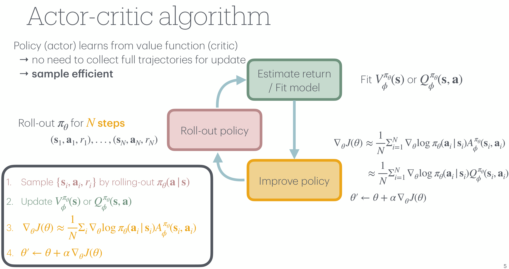
4. 행위자–비평가는 REINFORCE보다 표본 효율적이다 (Actor-Critic is Sample Efficient than REINFORCE)
강의는 두 알고리즘의 네 단계를 좌우로 나란히 놓고 구체적인 숫자 하나로 차이를 환산합니다.
| REINFORCE | 행위자–비평가 | |
|---|---|---|
| 1. 표집 | \(K\)개의 궤적 \(\{\tau^i\}\) | \(N\)개의 전이 \(\{\mathbf{s}_i, \mathbf{a}_i, r_i\}\) |
| 2. 평가 | \(r(\tau^i) = \Sigma_t r_t^i\) | \(V_\phi^{\pi_\theta}(\mathbf{s})\) 또는 \(Q_\phi^{\pi_\theta}(\mathbf{s}, \mathbf{a})\) 갱신 |
| 3. 경사 | \(\frac{1}{K} \Sigma_i \big( \Sigma_t \nabla_\theta \log \pi_\theta(\mathbf{a}_t^i \mid \mathbf{s}_t^i) \big) r(\tau^i)\) | \(\frac{1}{N} \Sigma_i \nabla_\theta \log \pi_\theta(\mathbf{a}_i \mid \mathbf{s}_i) A_\phi^{\pi_\theta}(\mathbf{s}_i, \mathbf{a}_i)\) |
| 4. 갱신 | \(\theta' \leftarrow \theta + \alpha \nabla_\theta J(\theta)\) | \(\theta' \leftarrow \theta + \alpha \nabla_\theta J(\theta)\) |
여기에 \(K = 1\), 에피소드 길이 \(= 1000\), \(N = 10\)을 대입하면 다음과 같습니다.
- REINFORCE는 1000 스텝마다 정책을 한 번 갱신합니다 — 궤적 하나가 끝나야 2단계를 계산할 수 있기 때문입니다.
- 행위자–비평가는 10 스텝마다 정책을 한 번 갱신합니다.
- 따라서 같은 표본 수당 정책 갱신 횟수가 행위자–비평가 쪽이 100배 많습니다. 강의는 이를 \(\therefore\) 기호와 함께 “More policy updates per sample in Actor-critic than REINFORCE”로 맺습니다.
이 슬라이드가 말하는 표본 효율은 “모은 표본 하나당 몇 번 배웠는가”이지, “같은 데이터를 몇 번 재사용했는가”가 아닙니다. 행위자–비평가도 각 전이 표본을 여전히 한 번만 쓰고 버립니다 — 다만 갱신의 주기가 촘촘해졌을 뿐입니다.
바로 다음 슬라이드가 지적하는 두 번째 결함이 정확히 이 지점입니다. 데이터 재사용은 아직 전혀 해결되지 않았고, 그것을 푸는 것이 이번 강의 후반부의 중요도 표집입니다.
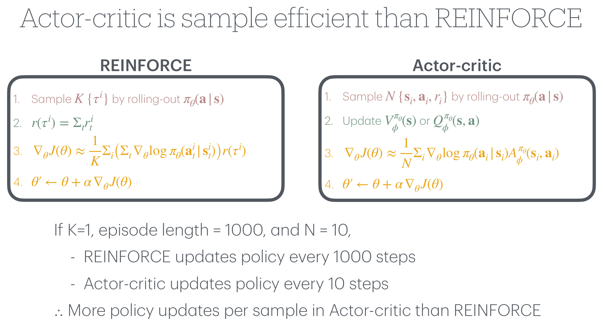
5. 이 행위자–비평가 접근의 문제점 (Issues in This Actor-Critic Approach)
이제 강의는 이번 회차의 목차를 문제 두 개로 제시합니다. 이 슬라이드는 7쪽과 10쪽에 두 번 등장하며, 두 번째 등장에서는 첫 항목이 흐려지고 두 번째 항목이 강조되어 어디까지 진행되었는지를 표시하는 이정표 역할을 합니다.
| 문제 | 처방 |
|---|---|
| ① 이점 추정이 정확하지 않다 (Advantage estimation is not accurate) | \(\rightarrow\) \(N\)-단계 반환값 (N-step returns) |
| ② 데이터를 경사 갱신 단 한 번에만 쓸 수 있다 (Data can be used for only one gradient update) | \(\rightarrow\) 중요도 표집 (Importance sampling) |
- ①은 3절 2단계의 품질 문제입니다. 행위자–비평가는 가중치 자리에 학습된 함수 \(A_\phi^{\pi_\theta}\)를 넣었는데, 그 함수가 틀려 있으면 경사 전체가 틀린 방향을 가리킵니다. 6절과 7절이 이 문제를 다룹니다.
- ②는 3절 4단계의 재사용 문제입니다. 4절에서 확인했듯 갱신 주기는 촘촘해졌지만 각 표본은 여전히 일회용입니다. 8절부터 12절까지가 이 문제를 다룹니다.
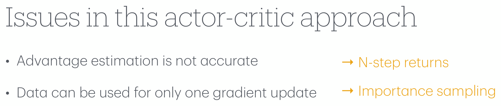
6. N-단계 반환값 (N-step Returns)
첫 번째 문제부터 봅니다. 이점을 어떻게 추정할 것인가? 정의부터 다시 적으면
\[ A^\pi(\mathbf{s}_t, \mathbf{a}_t) = Q^\pi(\mathbf{s}_t, \mathbf{a}_t) - V^\pi(\mathbf{s}_t) \]
이므로, 문제는 결국 \(Q^\pi\)를 무엇으로 추정할 것인가로 좁혀집니다. 강의는 양 극단의 두 추정량을 먼저 대비시킵니다.
6.1 극단 ①: 몬테카를로 추정 (무편향·고분산)
\[ \hat{Q}_{\mathrm{MC}}^{\pi}(\mathbf{s}_t, \mathbf{a}_t) = \sum_{t'=t}^{T} r(\mathbf{s}_{t'}, \mathbf{a}_{t'}) \]
- 분산이 큽니다(high variance). 강의의 표현대로 표본 단 하나로 추정하기 때문입니다. \((\mathbf{s}_t, \mathbf{a}_t)\) 이후의 전개는 전이 확률과 정책의 우연에 따라 매번 달라지는데, 우리는 그중 실제로 굴러간 한 갈래만 보고 값을 매깁니다.
- 편향은 없습니다(no bias). 이 값의 기댓값은 정의상 정확히 \(Q^\pi(\mathbf{s}_t, \mathbf{a}_t)\)입니다.
6.2 극단 ②: 한 스텝 부트스트랩 (저분산·고편향)
\[ \hat{Q}^{\pi}(\mathbf{s}_t, \mathbf{a}_t) = r(\mathbf{s}_t, \mathbf{a}_t) + V^\pi(\mathbf{s}_{t+1}) \]
- 분산이 작습니다(low variance). 강의의 표현대로 가치 함수 덕분(thanks to value function)입니다. 실제로 관측한 것은 한 스텝의 보상뿐이고, 그 이후의 모든 우연은 \(V^\pi\)라는 평균값 한 개로 대체되었습니다.
- 편향이 큽니다(high bias). \(V^\pi\)는 학습된 근사이므로 틀릴 수 있고, 강의는 괄호 안에 “실무에서는 항상 틀려 있다(it is always the case in practice)”고 덧붙입니다.
6.3 절충: \(n\)-단계 반환값
두 극단 사이에서 적당한 지점(sweet spot)을 찾자는 것이 \(n\)-단계 반환값입니다.
\[ \hat{Q}_n^{\pi}(\mathbf{s}_t, \mathbf{a}_t) = \sum_{t'=t}^{t+n-1} r(\mathbf{s}_{t'}, \mathbf{a}_{t'}) + V^\pi(\mathbf{s}_{t+n}) \]
- 앞의 \(n\) 스텝은 실제로 관측한 보상을 쓰고, 그 이후는 가치 함수로 갈음합니다.
- \(n = 1\)이면 6.2절의 한 스텝 부트스트랩, \(n \to T-t\)면 6.1절의 몬테카를로 추정이 됩니다. 즉 \(n\)은 두 극단을 잇는 손잡이입니다.
- 슬라이드는 마지막 줄에서 주황색으로 새로운 질문을 던집니다 — “How to decide \(n\)?” 이것이 다음 절의 출발점입니다.
슬라이드 오른쪽의 깔때기 그림이 이 절 전체의 직관입니다. 아래쪽 점 \(\mathbf{s}_t\)에서 출발한 궤적들은 시간이 흐를수록 부채처럼 벌어집니다. 전이 확률과 정책이 매 스텝 새로운 갈림길을 만들기 때문입니다.
- \(\mathbf{s}_t\) 가까이에서 자르면(아래쪽 작은 타원) 갈래가 아직 적으므로 실현값들이 서로 비슷합니다 → 분산이 작습니다.
- 멀리 가서 자르면(위쪽 큰 타원) 갈래가 이미 넓게 퍼져 있어 실현값이 크게 흔들립니다 → 분산이 큽니다.
\(n\)-단계 반환값은 이 깔때기를 “cut here” 지점에서 가로로 잘라, 자른 선 아래는 실제 보상으로, 자른 선 위는 가치 함수 하나로 처리하는 방식입니다. 자르는 높이를 낮출수록 분산은 줄지만 가치 함수에 기대는 비중이 커져 편향이 늘고, 높일수록 그 반대가 됩니다.
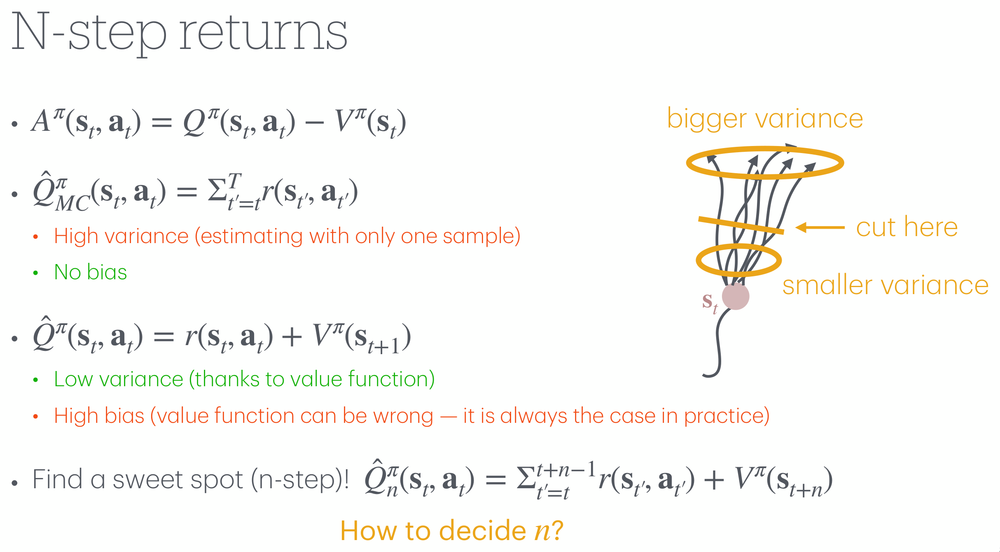
7. 일반화 이점 추정량 (Generalized Advantage Estimator, GAE)
7.1 \(n\)-단계 이점과 남은 문제
6절의 \(\hat{Q}_n^\pi\)를 이점의 정의에 대입하면 \(n\)-단계 이점(n-step advantage)을 얻습니다.
\[ \hat{A}_n^{\pi}(\mathbf{s}_t, \mathbf{a}_t) = \sum_{t'=t}^{t+n-1} r(\mathbf{s}_{t'}, \mathbf{a}_{t'}) + V^\pi(\mathbf{s}_{t+n}) - V^\pi(\mathbf{s}_t) \]
강의가 짚는 문제(Problem)는 이것입니다 — 어떤 \(n\)이 이점 추정에 좋은지 알기 어렵습니다. \(n\)은 문제마다, 심지어 학습 단계마다 달라질 수 있는데 그것을 사전에 고를 방법이 없습니다.
7.2 해법: 모든 \(n\)을 지수가중 평균한다
강의가 제시하는 해법(Solution)은 하나를 고르는 대신 전부 쓰는 것입니다.
\[ \hat{A}_{\mathrm{GAE}}^{\pi}(\mathbf{s}_t, \mathbf{a}_t) = \sum_{n=1}^{\infty} w_n \hat{A}_n^{\pi}(\mathbf{s}_t, \mathbf{a}_t), \qquad \text{where } w_n \propto \lambda^{n-1} \]
즉 \(n = 1, 2, 3, \ldots\)의 모든 \(n\)-단계 이점을 \(\lambda^{n-1}\)에 비례하는 가중치로 평균합니다. 새로운 초모수 \(\lambda\)가 하나 생기며, 강의는 \(\lambda = 0.95\)가 보통 잘 동작한다고 밝힙니다.
가중치의 정규화와 두 극단의 단계별 유도
슬라이드는 \(w_n \propto \lambda^{n-1}\)이라고만 적고 두 극단의 결과를 제시하므로, 가정 → 정의 → 중간 단계 → 최종식의 흐름으로 풀어 보겠습니다.
1단계 (정규화). 가중평균이 되려면 가중치의 합이 1이어야 합니다. \(0 \le \lambda < 1\)에 대해 등비급수의 합은
\[ \sum_{n=1}^{\infty} \lambda^{n-1} = \frac{1}{1 - \lambda} \]
이므로, 비례 관계 \(w_n \propto \lambda^{n-1}\)을 만족하면서 합이 1이 되는 가중치는 다음과 같습니다.
\[ w_n = (1 - \lambda)\, \lambda^{n-1} \]
2단계 (\(\lambda \to 0\)). \(\lambda = 0\)을 대입하면 \(w_1 = 1\)이고 \(n \ge 2\)에 대해 \(w_n = 0\)입니다. 따라서 1단계 이점만 살아남습니다.
\[ \hat{A}_{\mathrm{GAE}}^{\pi}(\mathbf{s}_t, \mathbf{a}_t) = \hat{A}_1^{\pi}(\mathbf{s}_t, \mathbf{a}_t) = r_t + V^\pi(\mathbf{s}_{t+1}) - V^\pi(\mathbf{s}_t) \]
이는 슬라이드가 적어 둔 “If \(\lambda = 0\)”의 결과와 일치하며, 6.2절의 한 스텝 부트스트랩(저분산·고편향)에 해당합니다.
3단계 (\(\lambda \to 1\)). \(w_n = (1-\lambda)\lambda^{n-1}\)에서 \(\lambda \to 1\)이면 각 개별 가중치는 0으로 수렴하지만 가중치의 질량이 점점 더 먼 \(n\) 쪽으로 밀려납니다. 극한에서는 끝까지 굴린 반환값만 남아
\[ \hat{A}_{\mathrm{GAE}}^{\pi}(\mathbf{s}_t, \mathbf{a}_t) = \sum_{t'=t}^{\infty} r_{t'} - V^\pi(\mathbf{s}_t) \]
가 되며, 이는 슬라이드의 “If \(\lambda = 1\)” 결과이자 6.1절의 몬테카를로 추정(무편향·고분산)에 해당합니다. \(\blacksquare\)
6절이 남긴 질문은 “\(n\)을 얼마로 둘 것인가”였고, 7절의 답은 “\(n\)을 고르지 않는다”입니다.
- \(\lambda\)는 하나의 \(n\)을 지목하지 않습니다. 대신 \(n = 1, 2, 3, \ldots\) 위의 기하분포를 지정합니다.
- \(\lambda = 0\)이면 \(n = 1\)에 모든 질량이 실려 저분산·고편향 극단이 되고, \(\lambda = 1\)이면 질량이 무한대 쪽으로 밀려 무편향·고분산 극단이 됩니다.
- 그 사이의 \(\lambda\)는 두 극단을 연속적으로 잇습니다. 초모수가 \(n\)(정수, 문제마다 다른 적정값)에서 \(\lambda\)(실수, \(0.95\)라는 범용 기본값이 있는 값)로 바뀌었다는 것이 실용적인 이득입니다.
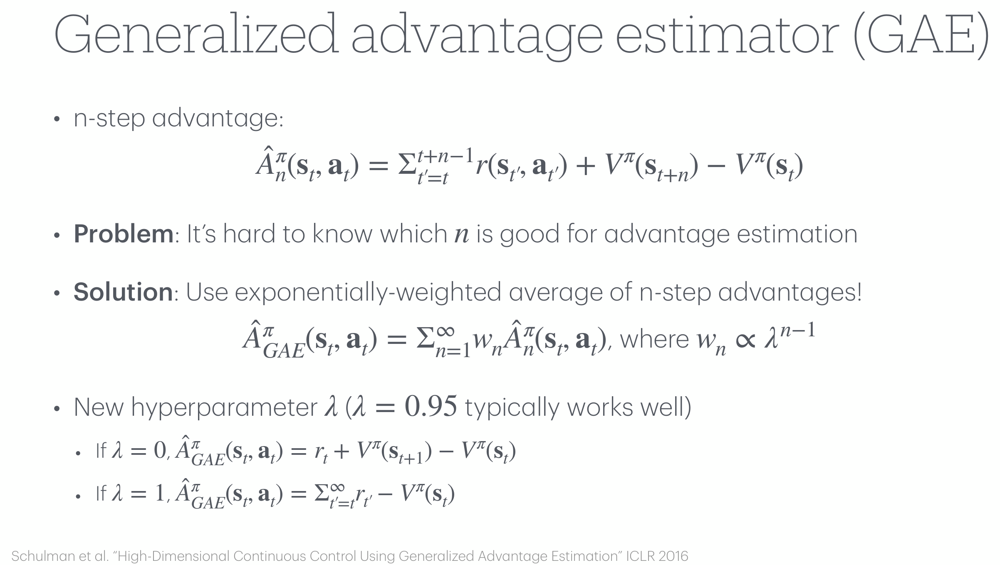
첫 번째 문제가 해결되었으므로, 강의는 5절의 이정표 슬라이드를 다시 꺼내 두 번째 항목으로 넘어감을 표시합니다.
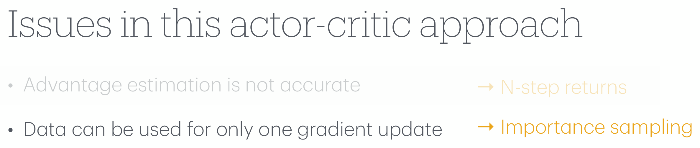
8. REINFORCE는 온폴리시 데이터를 요구한다 (REINFORCE Requires On-Policy Data)
두 번째 문제로 넘어가기 전에, 왜 데이터를 한 번밖에 쓸 수 없는지를 식에서 다시 확인합니다. 우리가 최대화하려는 것과 그 미분은 다음과 같습니다.
\[ J(\theta) = \mathbb{E}_{\tau \sim \pi_\theta(\tau)} \sum_t r(\mathbf{s}_t, \mathbf{a}_t) \]
\[ \nabla_\theta J(\theta) = \mathbb{E}_{\tau \sim \pi_\theta(\tau)} \Big[ \Big( \sum_{t=1}^{T} \nabla_\theta \log \pi_\theta(\mathbf{a}_t \mid \mathbf{s}_t) \Big) \Big( \sum_{t=1}^{T} r(\mathbf{s}_t, \mathbf{a}_t) \Big) \Big] \]
강의는 두 번째 식에서 기댓값의 아래첨자 \(\tau \sim \pi_\theta(\tau)\)에만 주황색 동그라미를 칩니다. 그리고 그 아래에 결론을 적습니다 — “정책 경사 \(\nabla_\theta J(\theta)\)를 계산하려면 온폴리시 데이터, 즉 \(\pi_\theta\)에서 나온 궤적이 필요하다.”
그다음이 핵심입니다. 정책을 한 번 갱신하면
\[ \theta' \leftarrow \theta + \alpha \nabla_\theta J(\theta) \]
이 되고, 이제 우리가 계산해야 할 것은 \(\nabla_\theta J(\theta)\)가 아니라 \(\nabla_{\theta'} J(\theta')\)입니다. 그런데 그 식의 기댓값은 \(\tau \sim \pi_{\theta'}(\tau)\)를 요구하는데, 손에 든 데이터는 \(\tau \sim \pi_\theta(\tau)\)에서 나온 것입니다.
- 강의의 표현대로 “한 번” 갱신하고 나면 우리가 가진 데이터는 오프폴리시(off-policy)가 되어 버립니다.
- 따라서 그 데이터는 버리고 새 궤적을 모아야 합니다. 이것이 3절 알고리즘의 4단계가 끝나는 순간 데이터가 폐기되는 이유입니다.
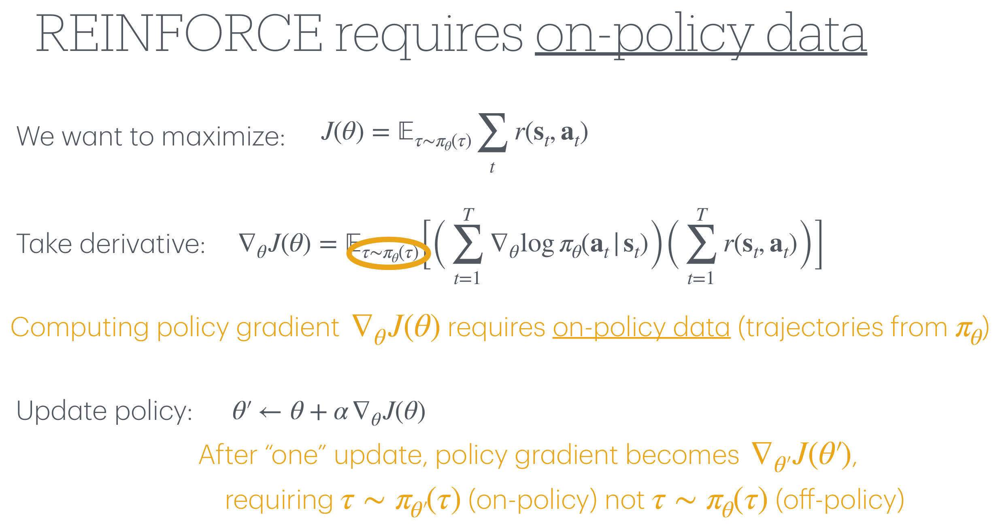
9. 정책 경사가 예전 데이터를 쓸 수 있을까 (Can Policy Gradients Use Old Data?)
문제를 다시 적으면 이렇습니다. 정책 경사
\[ \nabla_\theta J(\theta) = \mathbb{E}_{\tau \sim \pi_\theta(\tau)} \Big[ \sum_{t=1}^{T} \nabla_\theta \log \pi_\theta(\mathbf{a}_t \mid \mathbf{s}_t) R_t(\tau) \Big] \]
는 \(\tau \sim \pi_\theta(\tau)\)를 요구하는데, 우리가 가진 것은 \(\pi_{\theta_{\mathrm{old}}}\)에서 나온 데이터입니다. 강의의 답은 중요도 표집(importance sampling)입니다.
9.1 중요도 표집 항등식
임의의 두 분포 \(p\), \(q\)와 함수 \(f\)에 대해 다음이 성립합니다.
\[ \mathbb{E}_{x \sim p(x)}[f(x)] = \int p(x) f(x)\, dx = \int q(x) \frac{p(x)}{q(x)} f(x)\, dx = \mathbb{E}_{x \sim q(x)}\Big[ \frac{p(x)}{q(x)} f(x) \Big] \]
- 가운데 등식은 피적분함수에 \(q(x)/q(x) = 1\)을 곱한 항등 변형일 뿐입니다.
- 그런데 그 한 번의 곱셈으로 적분 앞에 놓인 분포가 \(p\)에서 \(q\)로 바뀌었습니다. 즉 “\(p\)에서 뽑아 평균 내는 일”을 “\(q\)에서 뽑아 \(p/q\)를 곱해 평균 내는 일”로 대체할 수 있습니다.
- 대가는 \(p/q\)라는 가중치입니다. 이 비를 계산할 수 있어야 이 변환이 성립합니다.
9.2 궤적 분포에 적용하기
\(p \to \pi_\theta(\tau)\), \(q \to \pi_{\theta_{\mathrm{old}}}(\tau)\)로 두면 곧바로 다음을 얻습니다.
\[ \mathbb{E}_{\tau \sim \pi_\theta(\tau)}[f(\tau)] = \mathbb{E}_{\tau \sim \pi_{\theta_{\mathrm{old}}}(\tau)}\Big[ \frac{\pi_\theta(\tau)}{\pi_{\theta_{\mathrm{old}}}(\tau)} f(\tau) \Big] \]
강의의 표현대로 “우리는 \(\pi_{\theta_{\mathrm{old}}}\)의 데이터를 쓸 수 있습니다!” 다만 슬라이드가 마지막 줄에 주황색으로 남긴 조건이 있습니다 — \(\pi_\theta(\tau) / \pi_{\theta_{\mathrm{old}}}(\tau)\)를 알아야 합니다. 그런데 \(\pi_\theta(\tau)\)는 궤적 전체의 확률이고, 그 안에는 지난 회차에서 확인했듯 우리가 알 수 없는 전이 확률이 들어 있습니다. 이 조건을 어떻게 충족할 것인지가 다음 절의 내용입니다.
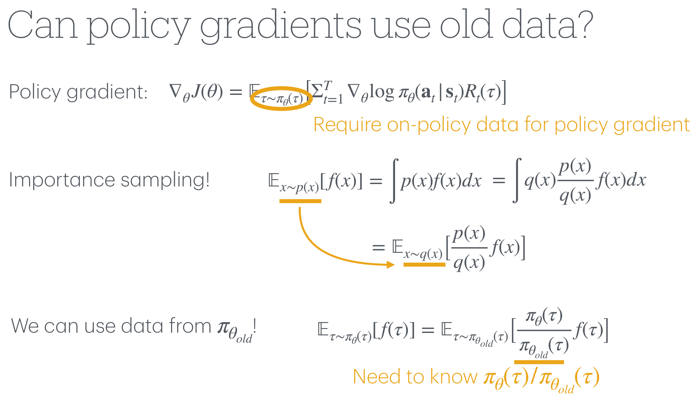
10. 정책 경사를 위한 중요도 표집 (Importance Sampling for Policy Gradients)
이제 9절의 항등식을 목적함수에 직접 적용해, 실제로 계산 가능한 경사식을 얻어 봅니다. 강의는 다섯 줄에 걸쳐 이를 전개합니다.
10.1 목적함수와 그 미분
먼저 목적함수에 중요도 표집을 적용합니다.
\[ J(\theta) = \mathbb{E}_{\tau \sim \pi_\theta(\tau)}[r(\tau)] = \mathbb{E}_{\tau \sim \pi_{\mathrm{old}}(\tau)} \Big[ \frac{\pi_\theta(\tau)}{\pi_{\theta_{\mathrm{old}}}(\tau)} r(\tau) \Big] \]
이 식을 \(\theta\)로 미분합니다. 기댓값의 기준 분포 \(\pi_{\theta_{\mathrm{old}}}(\tau)\)는 \(\theta\)와 무관한 상수 분포이므로, 이번에는 미분이 곧바로 기댓값 안으로 들어갑니다 — 8절에서 막혔던 바로 그 지점이 풀린 것입니다.
\[ \nabla_\theta J(\theta) = \mathbb{E}_{\tau \sim \pi_{\mathrm{old}}(\tau)} \Big[ \frac{\nabla_\theta \pi_\theta(\tau)}{\pi_{\theta_{\mathrm{old}}}(\tau)} r(\tau) \Big] \]
여기에 지난 회차의 로그 미분 항등식 \(\nabla_\theta p_\theta(x) = p_\theta(x) \nabla_\theta \log p_\theta(x)\)를 적용하면
\[ \nabla_\theta J(\theta) = \mathbb{E}_{\tau \sim \pi_{\theta_{\mathrm{old}}}(\tau)} \Big[ \frac{\pi_\theta(\tau)}{\pi_{\theta_{\mathrm{old}}}(\tau)} \nabla_\theta \log \pi_\theta(\tau)\, r(\tau) \Big] \]
를 얻습니다.
10.2 궤적 확률의 비에서 무엇이 소거되는가
식은 얻었지만 아직 계산할 수는 없습니다. 9.2절이 남긴 숙제 — \(\pi_\theta(\tau) / \pi_{\theta_{\mathrm{old}}}(\tau)\)를 알아야 한다 — 가 그대로 남아 있기 때문입니다. 궤적 확률을 전개해 확인해 보겠습니다.
1단계 (궤적 확률의 분해). 지난 회차에서 유도했듯 궤적의 확률은 세 항의 곱입니다.
\[ \pi_\theta(\tau) = p(\mathbf{s}_1) \prod_{t=1}^{T} \pi_\theta(\mathbf{a}_t \mid \mathbf{s}_t) \, p(\mathbf{s}_{t+1} \mid \mathbf{s}_t, \mathbf{a}_t) \]
2단계 (분모도 같은 형태). \(\pi_{\theta_{\mathrm{old}}}\)는 같은 환경에서 굴린 정책이므로, 초기 상태 분포 \(p(\mathbf{s}_1)\)과 전이 확률 \(p(\mathbf{s}_{t+1} \mid \mathbf{s}_t, \mathbf{a}_t)\)가 글자 하나 다르지 않게 같습니다.
\[ \pi_{\theta_{\mathrm{old}}}(\tau) = p(\mathbf{s}_1) \prod_{t=1}^{T} \pi_{\theta_{\mathrm{old}}}(\mathbf{a}_t \mid \mathbf{s}_t) \, p(\mathbf{s}_{t+1} \mid \mathbf{s}_t, \mathbf{a}_t) \]
3단계 (소거). 비를 취하면 두 항이 위아래에서 그대로 약분됩니다.
\[ \frac{\pi_\theta(\tau)}{\pi_{\theta_{\mathrm{old}}}(\tau)} = \frac{\cancel{p(\mathbf{s}_1)} \prod_{t=1}^{T} \pi_\theta(\mathbf{a}_t \mid \mathbf{s}_t) \cancel{p(\mathbf{s}_{t+1} \mid \mathbf{s}_t, \mathbf{a}_t)}}{\cancel{p(\mathbf{s}_1)} \prod_{t=1}^{T} \pi_{\theta_{\mathrm{old}}}(\mathbf{a}_t \mid \mathbf{s}_t) \cancel{p(\mathbf{s}_{t+1} \mid \mathbf{s}_t, \mathbf{a}_t)}} = \frac{\prod_{t=1}^{T} \pi_\theta(\mathbf{a}_t \mid \mathbf{s}_t)}{\prod_{t=1}^{T} \pi_{\theta_{\mathrm{old}}}(\mathbf{a}_t \mid \mathbf{s}_t)} \]
4단계 (결론). 남은 것은 두 정책의 행동 확률뿐이며, 정책은 우리가 만든 신경망이므로 강의의 표현대로 “둘 다 알고 있습니다(we know both)”. 여기에 \(\nabla_\theta \log \pi_\theta(\tau) = \Sigma_{t=1}^T \nabla_\theta \log \pi_\theta(\mathbf{a}_t \mid \mathbf{s}_t)\)까지 대입하면 다음을 얻습니다. \(\blacksquare\)
\[ \nabla_\theta J(\theta) = \mathbb{E}_{\tau \sim \pi_{\theta_{\mathrm{old}}}(\tau)} \Big[ \Big( \frac{\prod_{t=1}^{T} \pi_\theta(\mathbf{a}_t \mid \mathbf{s}_t)}{\prod_{t=1}^{T} \pi_{\theta_{\mathrm{old}}}(\mathbf{a}_t \mid \mathbf{s}_t)} \Big) \Big( \sum_{t=1}^{T} \nabla_\theta \log \pi_\theta(\mathbf{a}_t \mid \mathbf{s}_t) \Big) r(\tau) \Big] \]
지난 회차에서도 초기 상태 분포와 전이 확률이 사라지는 장면이 있었습니다. 그때는 \(\log \pi_\theta(\tau)\)를 전개했을 때 \(\theta\)에 대한 미분이 0이어서 탈락했습니다.
이번에는 미분이 아니라 분수에서 사라집니다. 같은 환경에서 굴린 두 궤적 분포이므로 환경이 기여하는 항이 분자와 분모에 똑같이 들어 있고, 따라서 약분됩니다.
원인은 다르지만 귀결은 같습니다 — 모형 없는(model-free) 계산이 가능해집니다. 강화학습에서 “알 수 없는 전이 확률”이 식에서 빠져나가는 두 가지 표준 경로를 한 번씩 본 셈입니다.
10.3 마지막 근사: 곱을 스텝별 비로 바꾸기
강의는 마지막 한 줄에서 위 식을 다음과 같이 근사합니다.
\[ \nabla_\theta J(\theta) \approx \mathbb{E}_{\tau \sim \pi_{\theta_{\mathrm{old}}}(\tau)} \Big[ \sum_{t=1}^{T} \frac{\pi_\theta(\mathbf{a}_t \mid \mathbf{s}_t)}{\pi_{\theta_{\mathrm{old}}}(\mathbf{a}_t \mid \mathbf{s}_t)} \nabla_\theta \log \pi_\theta(\mathbf{a}_t \mid \mathbf{s}_t)\, r(\tau) \Big] \]
- 무엇이 바뀌었는가: 궤적 전체에 걸친 하나의 곱 \(\prod_{t=1}^{T} (\cdot)\)이, 각 시각마다 붙는 한 스텝짜리 비 \(\pi_\theta(\mathbf{a}_t \mid \mathbf{s}_t) / \pi_{\theta_{\mathrm{old}}}(\mathbf{a}_t \mid \mathbf{s}_t)\)로 바뀌었습니다.
- 왜 바꾸는가: \(T\)개의 비를 모두 곱하면 각 항의 작은 오차가 곱셈으로 누적됩니다. 어느 한 시각에서 두 정책이 조금만 어긋나도 그 효과가 궤적 전체의 가중치를 좌우하게 되어, 에피소드가 길수록 이 가중치는 극단적으로 커지거나 0에 가까워집니다.
- 언제 정당한가: 강의가 오른쪽에 주황색으로 적어 둔 조건이 답입니다 — “\(\pi_\theta \approx \pi_{\theta_{\mathrm{old}}}\)이면 좋은 근사(Good approx. if \(\pi_\theta \approx \pi_{\theta_{\mathrm{old}}}\))”. 모든 비가 1 근처에 있으면 곱과 개별 항의 차이가 작아지기 때문입니다.
이 조건은 그냥 지나칠 각주가 아닙니다. “두 정책이 가까워야 한다”는 요구가 여기서 처음 등장하며, 12절에서 그것이 명시적인 제약으로 승격되고, 13절에서 그 제약을 구현하는 방식이 곧 PPO가 됩니다.
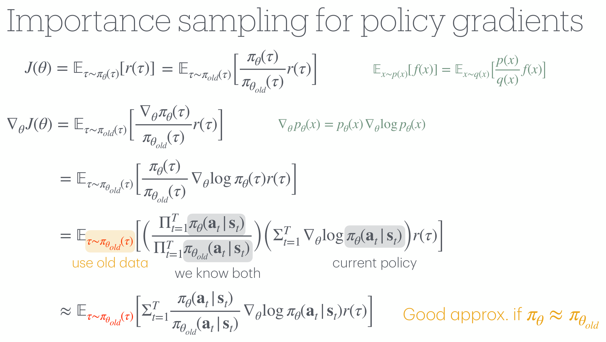
11. 중요도 표집을 적용한 행위자–비평가 (Actor-Critic with Importance Sampling)
이제 3절의 알고리즘에 중요도 표집을 끼워 넣습니다. 달라지는 것은 4단계가 \(K\)번 반복되는 안쪽 루프로 바뀐다는 점입니다.
- \(\pi_\theta(\mathbf{a} \mid \mathbf{s})\)를 롤아웃해 \(N\)개의 전이 \(\{\mathbf{s}_i, \mathbf{a}_i, r_i\}\)를 표집합니다.
- \(V_\phi^{\pi_\theta}(\mathbf{s})\)를 갱신하고 \(A_\phi^{\pi_\theta}(\mathbf{s}, \mathbf{a})\)를 계산합니다.
- \(\theta_{\mathrm{old}} \leftarrow \theta\), \(\theta^{(1)} \leftarrow \theta\) — 기준점을 고정합니다.
- \(k = 1, \ldots, K\)에 대해 반복합니다.
\[ \nabla_{\theta^{(k)}} J(\theta^{(k)}) \approx \frac{1}{N} \sum_{i=1}^{N} \frac{\pi_{\theta^{(k)}}(\mathbf{a}_i \mid \mathbf{s}_i)}{\pi_{\theta_{\mathrm{old}}}(\mathbf{a}_i \mid \mathbf{s}_i)} \nabla_\theta \log \pi_{\theta^{(k)}}(\mathbf{a}_i \mid \mathbf{s}_i)\, A_\phi^{\pi_\theta}(\mathbf{s}_i, \mathbf{a}_i) \]
\[ \theta^{(k+1)} \leftarrow \theta^{(k)} + \alpha \nabla_{\theta^{(k)}} J(\theta^{(k)}) \]
- \(\theta \leftarrow \theta^{(K+1)}\) — 안쪽 루프가 끝나면 결과를 본체 파라미터에 반영하고 1단계로 돌아갑니다.
- \(\theta_{\mathrm{old}}\)와 \(\theta^{(k)}\)의 역할이 다릅니다. \(\theta_{\mathrm{old}}\)는 데이터를 만들어 낸 정책으로 안쪽 루프 내내 고정되고, \(\theta^{(k)}\)는 지금 학습 중인 정책으로 매 반복마다 갱신됩니다. 확률비의 분모가 \(\theta_{\mathrm{old}}\)에 고정되어 있다는 점이 중요합니다 — 표본은 끝까지 그 정책에서 나온 것이기 때문입니다.
- 이것이 3절의 두 번째 결함에 대한 답입니다. 한 번 모은 \(N\)개의 표본으로 이제 \(K\)번 갱신할 수 있으므로, 표본당 학습량이 다시 \(K\)배 늘어납니다.
- 다만 \(k\)가 커질수록 \(\theta^{(k)}\)는 \(\theta_{\mathrm{old}}\)에서 점점 멀어집니다. 10.3절의 근사 조건 \(\pi_\theta \approx \pi_{\theta_{\mathrm{old}}}\)가 반복이 진행될수록 위태로워진다는 뜻이며, 다음 절이 정확히 이 문제를 다룹니다.
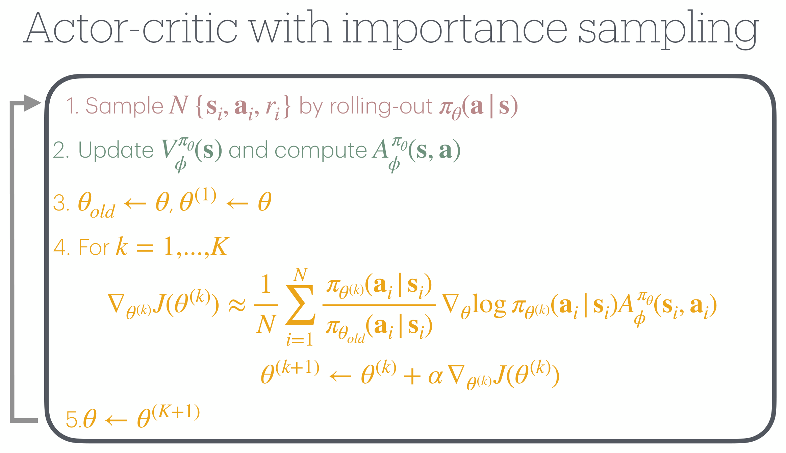
12. 중요도 표집의 문제 (Problem with Importance Sampling)
10.2절에서 얻은 경사식을 다시 놓고, 이번에는 확률비 항에 주목합니다.
\[ \nabla_\theta J(\theta) = \mathbb{E}_{\tau \sim \pi_{\theta_{\mathrm{old}}}(\tau)} \Big[ \underbrace{\Big( \frac{\prod_{t=1}^{T} \pi_\theta(\mathbf{a}_t \mid \mathbf{s}_t)}{\prod_{t=1}^{T} \pi_{\theta_{\mathrm{old}}}(\mathbf{a}_t \mid \mathbf{s}_t)} \Big)}_{\text{여기가 문제}} \Big( \sum_{t=1}^{T} \nabla_\theta \log \pi_\theta(\mathbf{a}_t \mid \mathbf{s}_t) \Big) r(\tau) \Big] \]
12.1 무엇이 잘못되는가
강의가 짚는 실패 경로는 다음과 같습니다.
- 갱신을 여러 번 하면, \(\pi_\theta(\mathbf{a}_t \mid \mathbf{s}_t)\)가 \(r(\tau)\)가 큰 행동 \(\mathbf{a}_t\)에 빠르게 들러붙습니다(quickly fits). 목적함수가 그 방향으로 계속 이득을 주기 때문입니다.
- 그 결과 \(\pi_\theta(\mathbf{a}_t \mid \mathbf{s}_t)\)가 지나치게 커지면 학습이 불안정해집니다(training becomes unstable).
문제의 구조를 보면 이유가 분명합니다. 확률비가 커질수록 그 표본의 가중치가 커지고, 커진 가중치는 정책을 같은 방향으로 더 세게 밀어 다시 확률비를 키웁니다. 한 번 어긋나기 시작하면 스스로를 증폭시키는 되먹임인 셈입니다. 게다가 11절의 안쪽 루프는 같은 데이터로 \(K\)번 이 과정을 반복하므로, 이 되먹임이 발동할 기회를 \(K\)번 주는 구조입니다.
12.2 처방: 두 정책을 가깝게 묶어 둔다
강의의 처방은 한 줄입니다 — “\(\pi_\theta\)를 \(\pi_{\theta_{\mathrm{old}}}\) 가까이 두어라(Keep \(\pi_\theta\) close to \(\pi_{\theta_{\mathrm{old}}}\)!)”. 구현 방식은 세 가지가 제시됩니다.
| 무엇을 제약하는가 | 제약식 | 이름 |
|---|---|---|
| 파라미터 공간 | \(\lVert \theta - \theta_{\mathrm{old}} \rVert^2 \le \epsilon\) | — |
| 정책 공간 (KL) | \(D_{\mathrm{KL}}(\pi_\theta, \pi_{\theta_{\mathrm{old}}}) \le \epsilon\) | TRPO (Trust Region Policy Optimization) |
| 정책 공간 (확률비) | \(1 - \epsilon \le \dfrac{\pi_\theta(\mathbf{a}_t \mid \mathbf{s}_t)}{\pi_{\theta_{\mathrm{old}}}(\mathbf{a}_t \mid \mathbf{s}_t)} \le 1 + \epsilon\) | PPO (Proximal Policy Optimization) |
첫 번째 줄의 \(\lVert \theta - \theta_{\mathrm{old}} \rVert^2 \le \epsilon\)은 가장 손쉬운 발상이지만, 우리가 정말로 원하는 것과 미묘하게 다릅니다.
- 우리가 통제하고 싶은 대상은 확률비, 즉 정책이 내놓는 분포입니다.
- 그런데 신경망에서 파라미터의 거리와 출력 분포의 거리는 비례하지 않습니다. 어떤 방향으로는 \(\theta\)가 조금만 움직여도 분포가 크게 달라지고, 다른 방향으로는 많이 움직여도 분포가 거의 그대로입니다.
그래서 TRPO와 PPO는 모두 제약을 정책 공간에서 겁니다. 둘의 차이는 그 거리를 무엇으로 재느냐입니다 — TRPO는 두 분포 사이의 KL 발산으로, PPO는 확률비 자체로 잽니다. 뒤의 것이 훨씬 단순하며, 14절이 보여 주듯 그 단순함이 PPO의 최대 장점이 됩니다.
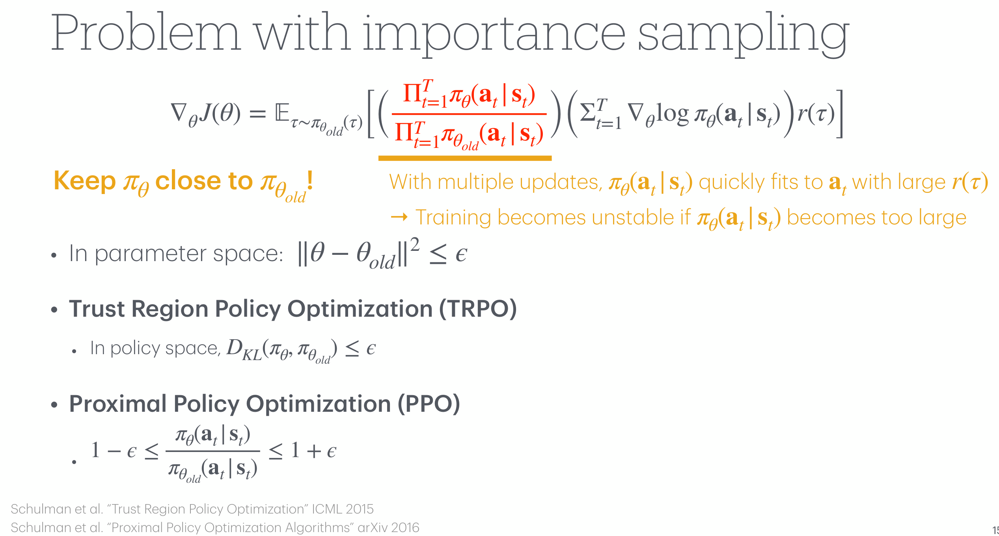
13. 근위 정책 최적화 (Proximal Policy Optimization, PPO)
같은 제목의 슬라이드 네 장이 이어지며 PPO를 완성합니다. 순서대로 ① 무엇을 모아 만든 알고리즘인지, ② 왜 자르는지, ③ 어떻게 한 식으로 합치는지, ④ 전체 절차를 다룹니다.
13.1 PPO는 네 가지 기법을 얹은 행위자–비평가다
강의는 PPO를 다음 네 가지 기법을 적용한 행위자–비평가 알고리즘으로 정의합니다.
| 기법 | 무엇을 해결하는가 | 다룬 절 |
|---|---|---|
| 이점 함수를 써서 분산을 줄인다 | 정책 경사의 고분산 | 1절 |
| GAE로 편향–분산 절충을 개선한다 | 이점 추정의 부정확성 (문제 ①) | 6–7절 |
| 중요도 표집으로 여러 번 경사 갱신을 한다 | 데이터의 일회성 (문제 ②) | 9–11절 |
| 정책 공간에서 목적함수를 잘라(clipping) 제약한다 | 중요도 표집의 불안정성 | 12절 |
앞의 세 줄은 이미 다룬 내용이고, 마지막 줄만이 이번 절의 새 내용입니다. 그리고 이때 최대화할 목적함수는 다음과 같습니다.
\[ J(\theta) \approx \mathbb{E}_{\tau \sim \pi_{\theta_{\mathrm{old}}}(\tau)} \Big[ \sum_{t=1}^{T} \underbrace{\frac{\pi_\theta(\mathbf{a}_t \mid \mathbf{s}_t)}{\pi_{\theta_{\mathrm{old}}}(\mathbf{a}_t \mid \mathbf{s}_t)}}_{=\; \mathrm{ratio}_t(\theta)} A_{\mathrm{GAE}}^{\pi_\theta}(\mathbf{s}_t, \mathbf{a}_t) \Big] \]
- 10.3절의 경사식에서 보상 \(r(\tau)\)가 이점 \(A_{\mathrm{GAE}}^{\pi_\theta}\)로 바뀌었습니다 — 1절의 사다리와 7절의 GAE가 여기서 합류합니다.
- 그리고 이제부터는 경사가 아니라 목적함수 자체를 적습니다. 잘라야 할 대상이 경사가 아니라 목적함수이기 때문입니다.
- 강의는 확률비에 \(\mathrm{ratio}_t(\theta)\)라는 이름을 붙입니다. 이 기호가 남은 세 슬라이드의 주인공입니다.
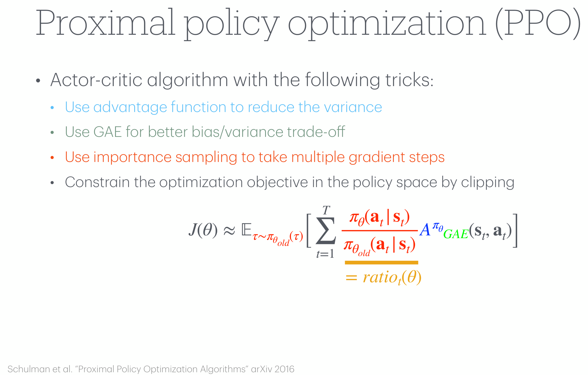
13.2 왜 잘라야 하는가: 이점의 부호에 따른 두 경우
목적함수 \(\mathrm{ratio}_t(\theta) A_{\mathrm{GAE}}^{\pi_\theta}\)를 최대화할 때 무슨 일이 벌어지는지, 이점의 부호로 나누어 봅니다. 강의는 확률비 정의 옆에 주황색 볼드로 “많은 갱신 때문에 문제가 된다(Problematic due to many updates!)”고 적어 두었습니다.
경우 ① \(A_{\mathrm{GAE}}^{\pi_\theta} > 0\) (평균보다 나은 행동)
- \(\pi_\theta(\mathbf{a}_t \mid \mathbf{s}_t)\)가 커지면 \(\mathrm{ratio}_t(\theta)\)가 커지고, 따라서 \(J(\theta)\)도 커집니다.
- 최적화는 이 방향을 좋아하므로 그 행동의 확률을 끝없이 밀어 올립니다. 좋은 행동이니 확률을 올리는 것 자체는 맞지만, 한 번에 너무 멀리 가는 것이 문제입니다.
- 처방: \(\pi_\theta\)가 \(\pi_{\theta_{\mathrm{old}}}\)보다 지나치게 커지면 \(J(\theta)\)가 더는 변하지 않게 만듭니다.
\[ J(\theta) = \mathbb{E}_{\tau \sim \pi_{\mathrm{old}}(\tau)} \min\big( \mathrm{ratio}_t(\theta),\, 1 + \epsilon \big) A_{\mathrm{GAE}}^{\pi_\theta} = \min\big( \mathrm{ratio}_t(\theta) A_{\mathrm{GAE}}^{\pi_\theta},\, (1 + \epsilon) A_{\mathrm{GAE}}^{\pi_\theta} \big) \]
경우 ② \(A_{\mathrm{GAE}}^{\pi_\theta} < 0\) (평균보다 못한 행동)
- 이번에는 \(\pi_\theta(\mathbf{a}_t \mid \mathbf{s}_t)\)가 작아지면 \(\mathrm{ratio}_t(\theta)\)가 작아지고, 음수와 곱해지므로 \(J(\theta)\)는 오히려 커집니다.
- 즉 최적화는 그 행동의 확률을 0을 향해 끝없이 밀어 내립니다.
- 처방: \(\pi_\theta\)가 \(\pi_{\theta_{\mathrm{old}}}\)보다 지나치게 작아지면 \(J(\theta)\)가 더는 변하지 않게 만듭니다.
\[ J(\theta) = \mathbb{E}_{\tau \sim \pi_{\mathrm{old}}(\tau)} \max\big( \mathrm{ratio}_t(\theta),\, 1 - \epsilon \big) A_{\mathrm{GAE}}^{\pi_\theta} = \min\big( \mathrm{ratio}_t(\theta) A_{\mathrm{GAE}}^{\pi_\theta},\, (1 - \epsilon) A_{\mathrm{GAE}}^{\pi_\theta} \big) \]
두 식의 오른쪽이 모두 \(\min\)이 되는 이유
두 경우 모두 왼쪽에서는 \(\min\)과 \(\max\)로 갈렸는데 오른쪽에서는 나란히 \(\min\)이 됩니다. 부등식에 곱셈을 적용하는 규칙 하나로 설명됩니다.
1단계 (경우 ①, 양수를 곱할 때). \(A > 0\)이면 곱셈이 대소 관계를 보존하므로, \(\min\) 안으로 그대로 분배됩니다.
\[ \min(x, y) \cdot A = \min(xA,\, yA) \qquad (A > 0) \]
여기에 \(x = \mathrm{ratio}_t(\theta)\), \(y = 1 + \epsilon\)를 넣으면 경우 ①의 오른쪽 식이 나옵니다.
2단계 (경우 ②, 음수를 곱할 때). \(A < 0\)이면 곱셈이 대소 관계를 뒤집으므로, \(\max\)가 \(\min\)으로 바뀝니다.
\[ \max(x, y) \cdot A = \min(xA,\, yA) \qquad (A < 0) \]
여기에 \(x = \mathrm{ratio}_t(\theta)\), \(y = 1 - \epsilon\)를 넣으면 경우 ②의 오른쪽 식이 나옵니다. \(\blacksquare\)
두 경우가 모두 “\(\min\)을 취한다”는 같은 형태로 정리되었다는 사실이, 다음 절에서 두 식을 하나로 합칠 수 있게 해 주는 열쇠입니다.
클리핑이 확률비를 무조건 \([1-\epsilon, 1+\epsilon]\) 안에 가둔다고 읽으면 오해입니다. 각 경우에서 실제로 잘리는 것은 한쪽 방향뿐입니다.
- \(A > 0\)일 때는 확률비가 \(1 + \epsilon\)을 넘을 때만 이득이 끊깁니다. 반대로 확률비가 \(1 - \epsilon\) 아래로 내려가는 것은 막지 않습니다 — 좋은 행동의 확률이 낮아지는 것은 목적함수 값이 줄어드는 방향이라 최적화가 알아서 피하며, 이미 지나치게 낮아졌다면 되돌아올 길을 열어 두어야 하기 때문입니다.
- \(A < 0\)일 때는 대칭적으로 확률비가 \(1 - \epsilon\) 아래로 내려갈 때만 이득이 끊깁니다.
즉 클리핑은 “더 가도 이득이 없다”고 선언할 뿐, “더 가지 못한다”고 금지하지 않습니다. 제약(constraint)이 아니라 목적함수의 평탄화로 구현된 제약이라는 점이 TRPO와 갈리는 지점입니다.
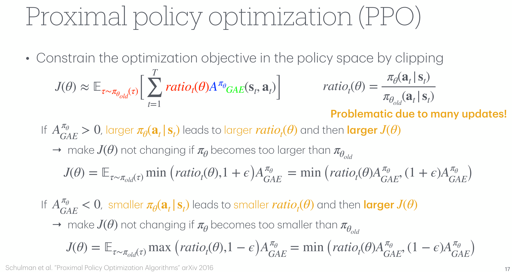
13.3 두 경우를 한 식으로: 클리핑된 목적함수
13.2절의 두 경우를 하나로 합친 것이 PPO의 클리핑된 목적함수(clipped objective)입니다.
\[ J(\theta) = \mathbb{E}_{\tau \sim \pi_{\theta_{\mathrm{old}}}(\tau)} \Big[ \sum_{t=1}^{T} \min \big( \mathrm{ratio}_t(\theta) A_{\mathrm{GAE}}^{\pi_\theta},\; \mathrm{clip}(\mathrm{ratio}_t(\theta),\, 1 - \epsilon,\, 1 + \epsilon) A_{\mathrm{GAE}}^{\pi_\theta} \big) \Big] \]
여기서 \(\mathrm{clip}(x, a, b)\)는 \(x\)를 구간 \([a, b]\) 안으로 잘라 넣는 함수입니다. 이 한 식이 정말로 두 경우를 모두 담고 있는지, 확률비의 위치별로 확인해 보겠습니다.
| \(\mathrm{ratio}_t(\theta)\)의 위치 | \(A_{\mathrm{GAE}}^{\pi_\theta} > 0\)일 때 | \(A_{\mathrm{GAE}}^{\pi_\theta} < 0\)일 때 |
|---|---|---|
| \(< 1 - \epsilon\) | \(\mathrm{clip} = 1-\epsilon\)이고 \(\mathrm{ratio} \cdot A < (1-\epsilon) A\) → \(\mathrm{ratio}_t(\theta) A\) (자르지 않음) | \(\mathrm{ratio} \cdot A > (1-\epsilon) A\) → \((1-\epsilon) A\) (잘림) |
| \([1 - \epsilon,\, 1 + \epsilon]\) | \(\mathrm{clip} = \mathrm{ratio}\) → \(\mathrm{ratio}_t(\theta) A\) | \(\mathrm{ratio}_t(\theta) A\) |
| \(> 1 + \epsilon\) | \(\mathrm{clip} = 1+\epsilon\)이고 \(\mathrm{ratio} \cdot A > (1+\epsilon) A\) → \((1+\epsilon) A\) (잘림) | \(\mathrm{ratio} \cdot A < (1+\epsilon)A\) → \(\mathrm{ratio}_t(\theta) A\) (자르지 않음) |
- \(A > 0\)인 열을 위에서 아래로 읽으면 위쪽에서만 잘립니다 — 경우 ①과 일치합니다.
- \(A < 0\)인 열을 읽으면 아래쪽에서만 잘립니다 — 경우 ②와 일치합니다.
- 두 열 모두 구간 안에서는 원래 목적함수 그대로입니다. 즉 확률비가 1 근처에 머무는 한 이 식은 13.1절의 중요도 표집 목적함수와 완전히 같습니다. 클리핑은 어디까지나 벗어났을 때만 작동하는 안전장치입니다.
바깥의 \(\min\)은 두 항 중 작은 쪽, 즉 덜 낙관적인 쪽을 고릅니다. 이것이 클리핑을 보수적인(pessimistic) 하한으로 만듭니다.
- 자르지 않은 항 \(\mathrm{ratio}_t(\theta) A\)가 잘린 항보다 크면(더 이득이면) \(\min\)이 잘린 항을 고릅니다 — 과도한 이득을 인정하지 않습니다.
- 반대로 자르지 않은 항이 작으면 그대로 씁니다 — 손해는 그대로 반영해, 잘못 간 방향에서 되돌아올 신호를 남깁니다.
그래서 최적화는 확률비를 구간 밖으로 밀어내서 얻을 것이 없고, 안쪽에서만 이득을 볼 수 있습니다. 명시적인 부등식 제약 없이 목적함수의 모양만으로 12절의 요구를 구현한 셈입니다.
이 슬라이드의 합쳐진 식은 합의 인덱스가 \(\Sigma_{t=1}^{T}\)인데 그 안의 확률비는 \(\mathrm{ratio}_i(\theta)\)로 적혀 있고, 바로 아래 두 줄(13.2절의 두 경우)에서는 같은 대상이 \(\mathrm{ratio}_t(\theta)\)로 적혀 있습니다. 다음 슬라이드의 알고리즘에서는 표본 인덱스로 \(i\)를 쓰면서 \(\mathrm{ratio}_i(\theta^{(k)})\)로 적습니다.
둘은 같은 대상이며, 차이는 합이 시각을 도는가(\(t\)) 표본을 도는가(\(i\))일 뿐입니다. 본 포스트는 궤적 위의 합을 다루는 이 절에서는 \(\mathrm{ratio}_t(\theta)\)로, 표본 평균을 다루는 다음 절에서는 슬라이드를 따라 \(\mathrm{ratio}_i(\theta^{(k)})\)로 표기를 통일합니다.
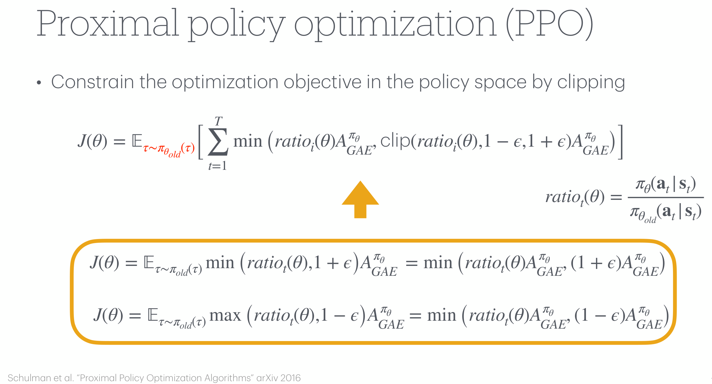
13.4 PPO 알고리즘 전체
지금까지의 조각을 모두 끼워 넣으면 PPO의 전체 절차가 나옵니다. 11절의 알고리즘과 뼈대는 같고, 4단계의 내용만 달라집니다.
- \(\pi_\theta(\mathbf{a} \mid \mathbf{s})\)를 롤아웃해 \(N\)개의 전이 \(\{\mathbf{s}_i, \mathbf{a}_i, r_i\}\)를 표집합니다.
- \(V_\phi^{\pi_\theta}(\mathbf{s})\)를 갱신하고 \(A_{\mathrm{GAE}}^{\pi_\theta}(\mathbf{s}, \mathbf{a})\)를 계산합니다. — 7절의 GAE가 여기에 들어갑니다.
- \(\theta_{\mathrm{old}} \leftarrow \theta\), \(\theta^{(1)} \leftarrow \theta\)
- \(k = 1, \ldots, K\)에 대해 반복합니다.
\[ J(\theta^{(k)}) = \frac{1}{N} \sum_{i=1}^{N} \min \big( \mathrm{ratio}_i(\theta^{(k)}) A_{\mathrm{GAE}}^{\pi_\theta},\; \mathrm{clip}(\mathrm{ratio}_i(\theta^{(k)}),\, 1 - \epsilon,\, 1 + \epsilon) A_{\mathrm{GAE}}^{\pi_\theta} \big) + H(\pi_{\theta^{(k)}}) \]
\[ \theta^{(k+1)} \leftarrow \theta^{(k)} + \alpha \nabla_{\theta^{(k)}} J(\theta^{(k)}) \]
- \(\theta \leftarrow \theta^{(K+1)}\)
- 11절과의 차이는 4단계 한 줄뿐입니다. 확률비를 그냥 곱하던 자리에 클리핑된 목적함수가 들어갔고, 가중치가 \(A_\phi^{\pi_\theta}\)에서 \(A_{\mathrm{GAE}}^{\pi_\theta}\)로 바뀌었습니다.
- 경사가 아니라 목적함수를 적는다는 점도 달라졌습니다. \(\min\)과 \(\mathrm{clip}\)이 들어간 식은 손으로 미분해 적기보다 자동 미분에 맡기는 편이 자연스럽기 때문이며, 4단계 둘째 줄에서 \(\nabla_{\theta^{(k)}} J(\theta^{(k)})\)를 취해 경사 상승을 수행합니다.
- 마지막 항 \(H(\pi_{\theta^{(k)}})\)가 여기서 처음 등장합니다. 정책의 엔트로피(entropy)를 목적함수에 더해 주는 항으로, 다음 절에서 엔트로피 계수(entropy coefficient)가 초모수 목록에 오르는 근거가 됩니다.
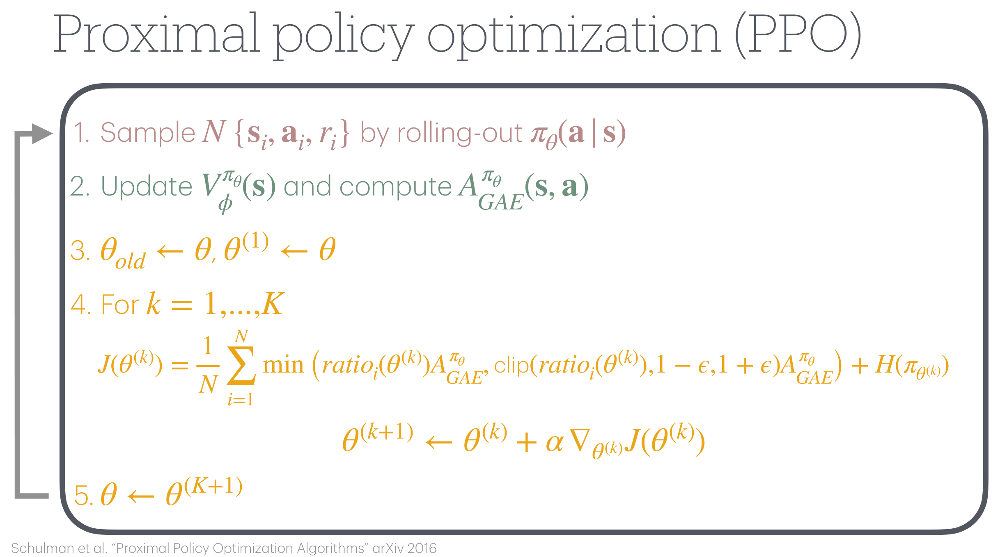
14. PPO는 왜 좋은가 (Why is PPO Good?)
강의는 PPO의 장점 셋과 단점 하나를 대비시켜 정리합니다.
- 구현이 단순합니다(Simple implementation). 12.2절에서 보았듯 TRPO의 KL 제약은 별도의 제약 최적화 절차를 요구하지만, PPO는 \(\min\)과 \(\mathrm{clip}\) 두 함수로 끝납니다.
- 이산·연속 행동 공간을 모두 지원합니다(Support both discrete and continuous action spaces). 목적함수가 요구하는 것은 행동의 확률(밀도)뿐이라, 범주형 분포든 가우시안이든 그대로 얹힙니다.
- 확장 가능합니다 — 병렬화가 쉽습니다(Scalable, parallelizable). 1단계의 롤아웃이 서로 독립이므로 환경을 수천 개 복제해 동시에 굴릴 수 있습니다.
- 반면 초모수에 민감합니다(Sensitive to hyperparameters). 강의가 드는 예는 롤아웃 길이 \(N\), 배치 크기, 엔트로피 계수, 학습률 등입니다.
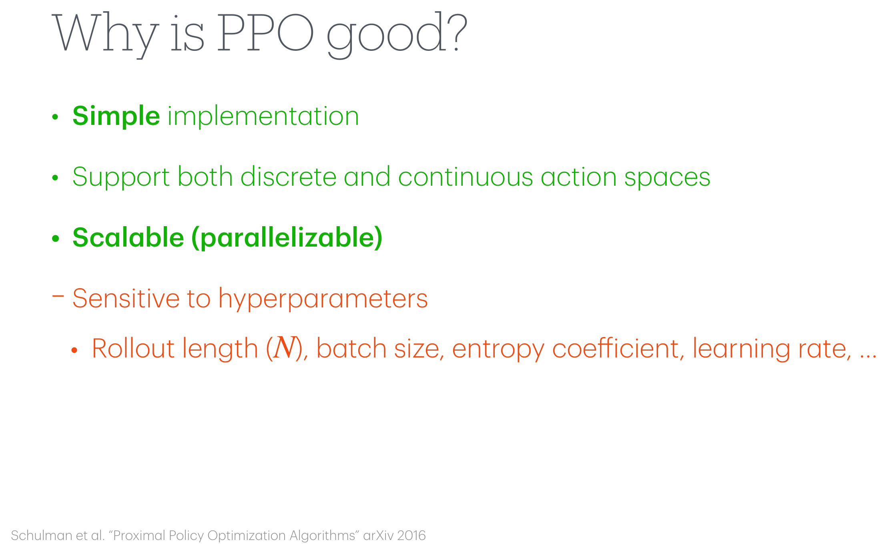
14.1 병렬화가 실제로 무엇을 가능하게 하는가
이어지는 두 슬라이드는 제목 없이 데모 장면과 출처 표기만 담고 있으며, 위 목록의 “Scalable (parallelizable)” 항목이 실제 연구에서 어떤 모습인지를 보여 줍니다.
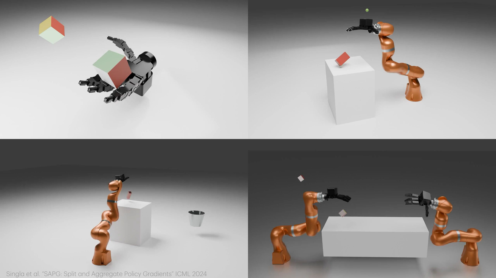
15. 걷는 것 이상 (More than Just Walking)
PPO의 활용은 시뮬레이터 안에 머물지 않습니다. 강의는 실제 로봇의 보행 영상을 먼저 보여 준 뒤, 그보다 어려운 동작으로 넘어갑니다.
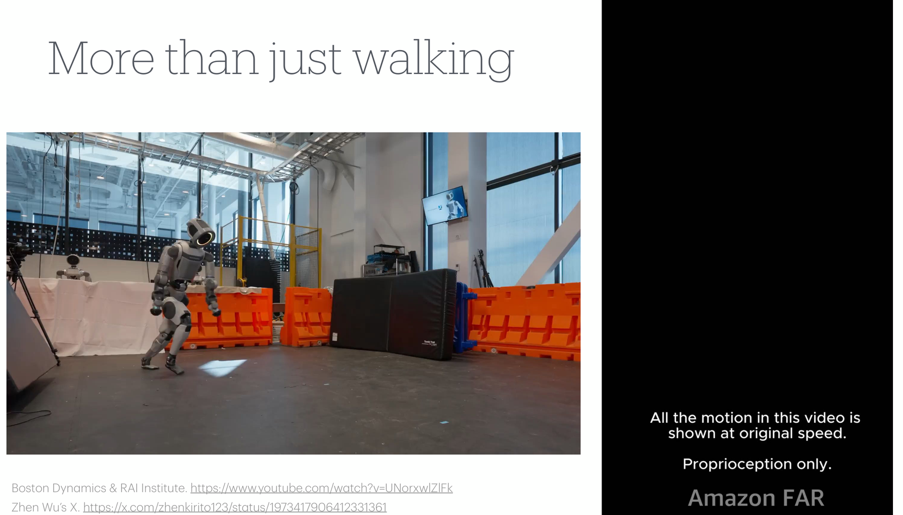
16. ChatGPT (인간 피드백 기반 강화학습, RL from Human Feedback)
로봇을 떠나, 강의는 PPO가 쓰인 가장 널리 알려진 사례로 마무리합니다.
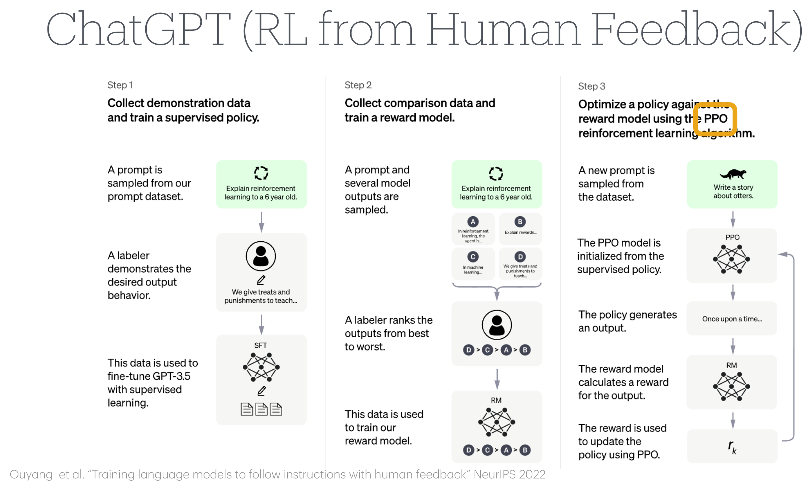
17. 표본 효율을 더 끌어올릴 수 있을까 (Can We Further Improve Sample Efficiency?)
마지막 슬라이드는 이번 회차가 얻은 것과 남긴 것을 정리하며 다음 주제를 예고합니다.
- 중요도 표집 덕분에 (약간) 오프폴리시인 데이터로 여러 번 갱신할 수 있게 되었습니다. 11절과 13.4절의 안쪽 \(K\)회 루프가 그 성과입니다.
- 그럼에도 PPO는 여전히 온폴리시 강화학습으로 분류됩니다. 이유는 두 가지입니다.
- 제약 때문에 새 정책이 롤아웃 정책과 충분히 가까워야 합니다 — 12절의 요구가 그대로 족쇄가 됩니다.
- 여러 개의 서로 다른 정책에서 나온 데이터는 다룰 수 없습니다. 확률비의 분모가 단 하나의 \(\pi_{\theta_{\mathrm{old}}}\)로 고정되어 있기 때문입니다.
- 그래서 다음 회차는 오프폴리시 강화학습(DQN, DDPG, SAC)으로 넘어갑니다.
이번 회차가 “한 번 모은 데이터를 몇 번까지 쓸 수 있는가”를 \(K\)번으로 늘렸다면, 다음 회차는 “서로 다른 여러 정책이 남긴 데이터까지 쓸 수 있는가”를 묻습니다. 위 두 항목이 그 질문의 걸림돌을 정확히 짚어 두었으므로, 다음 회차의 세 알고리즘이 무엇을 다르게 하는지는 확률비의 분모를 어떻게 처리하는가를 기준으로 읽으면 됩니다.
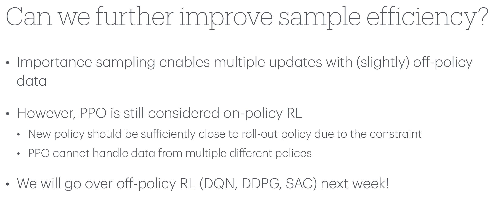
정리하며 (Closing Remarks)
이번 강의의 논리 사슬을 한 장으로 요약하면 다음과 같습니다.
| 단계 | 내용 | 근거 |
|---|---|---|
| ① 출발점 확인 | 정책 경사의 가중치 자리는 이미 이점 \(A_\phi^{\pi_\theta}\)로 정해졌고, 남은 문제는 그 추정의 품질과 데이터 재사용이다 | 1절 (Summary of reducing variance) |
| ② 개선의 성격 파악 | 행위자–비평가는 가중치를 학습된 함수로 바꿔 갱신 주기를 궤적에서 스텝으로 끌어내렸다 | 2–3절 (REINFORCE vs actor-critic) |
| ③ 이득의 계량 | \(K=1\)·에피소드 1000·\(N=10\)이면 갱신 횟수가 100배 차이 난다 — 다만 각 표본은 여전히 일회용이다 | 4절 (Sample efficiency 비교) |
| ④ 두 결함 특정 | ① 이점 추정이 부정확하다, ② 데이터를 한 번밖에 쓸 수 없다 | 5절 (Issues in this actor-critic approach) |
| ⑤ 편향–분산 축 설정 | 몬테카를로는 무편향·고분산, 한 스텝 부트스트랩은 저분산·고편향 — 깔때기를 어디서 자를 것인가의 문제다 | 6절 (N-step returns) |
| ⑥ \(n\) 선택 문제 해소 | 하나의 \(n\)을 고르는 대신 모든 \(n\)-단계 이점을 \(w_n = (1-\lambda)\lambda^{n-1}\)로 평균한다 (\(\lambda=0\)·\(1\)이 두 극단) | 7절 (GAE) |
| ⑦ 일회성의 원인 지목 | 한 번 갱신하면 목표가 \(\nabla_{\theta'}J(\theta')\)로 바뀌어 손에 든 데이터가 오프폴리시가 된다 | 8절 (REINFORCE requires on-policy data) |
| ⑧ 기준 분포 이동 | 중요도 표집 항등식으로 기댓값의 기준을 \(\pi_\theta\)에서 \(\pi_{\theta_{\mathrm{old}}}\)로 옮긴다 — 대가는 확률비 | 9절 (Can policy gradients use old data?) |
| ⑨ 계산 가능성 확보 | 궤적 확률의 비에서 초기 분포와 알 수 없는 전이 확률이 약분되어 정책의 확률만 남는다 | 10.2절 (Importance sampling for PG) |
| ⑩ 근사와 그 조건 | 궤적 전체의 곱을 스텝별 비로 바꾸는 근사는 \(\pi_\theta \approx \pi_{\theta_{\mathrm{old}}}\)일 때만 유효하다 | 10.3절 |
| ⑪ 재사용 구현 | \(\theta_{\mathrm{old}}\)를 고정한 채 \(K\)번 갱신하는 안쪽 루프를 알고리즘에 넣는다 | 11절 (AC with importance sampling) |
| ⑫ 불안정성 진단 | 갱신이 반복될수록 \(\pi_\theta\)가 큰 보상의 행동에 들러붙어 확률비가 폭주한다 → 두 정책을 묶어야 한다 | 12절 (Problem with importance sampling) |
| ⑬ 제약의 세 가지 구현 | 파라미터 공간의 \(\lVert\theta-\theta_{\mathrm{old}}\rVert^2 \le \epsilon\), 정책 공간의 KL(TRPO), 확률비 자체(PPO) | 12.2절 |
| ⑭ 부호별 클리핑 방향 | \(A>0\)이면 위쪽에서, \(A<0\)이면 아래쪽에서 이득을 끊는다 — 음수를 곱하면 \(\max\)가 \(\min\)이 된다 | 13.2절 |
| ⑮ 한 식으로 통합 | \(\min(\mathrm{ratio}\cdot A,\ \mathrm{clip}(\mathrm{ratio},1-\epsilon,1+\epsilon)\cdot A)\) 하나가 두 경우를 자동으로 처리한다 | 13.3절 |
| ⑯ 알고리즘 완성 | GAE + 중요도 표집 + 클리핑 + 엔트로피 항 \(H(\pi_\theta)\)를 얹은 행위자–비평가가 PPO다 | 13.4절 |
| ⑰ 성적표 | 단순·이산/연속 지원·병렬화 가능, 대신 초모수에 민감하다 | 14절 (Why is PPO good?) |
| ⑱ 적용 범위 | 대규모 병렬 조립·조작, 실물 인간형 로봇의 보행과 도약, 게임, 그리고 ChatGPT의 RLHF | 14.1–16절 |
| ⑲ 남은 한계 | 확률비의 분모가 하나로 고정되어 있어 여러 정책의 데이터는 못 쓴다 — PPO는 여전히 온폴리시다 | 17절 (Can we further improve?) |